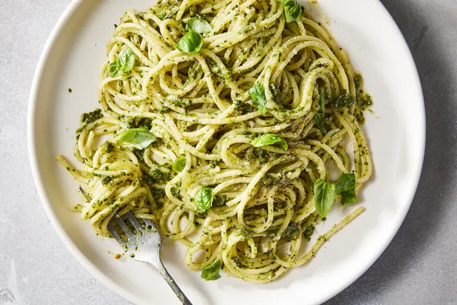

Pesto Pasta

Description
Homemade Pesto Pasta that’s overflowing with flavor! It’s made with hearty spaghetti and a generous coating of herbaceous, fresh basil pesto sauce. Then it’s finished with sharp aged parmesan and rich pine nuts for a toasty crunch.
Ingredients
- 1/2 cup pine nuts
- 3 cups fresh basil leaves
- 2 cloves garlic, peeled
- Olive oil as needed
- Grated Parmesan
- Salt and pepper to taste
- 1 pound pasta, any shape
Steps
- Toast nuts in a dry skillet over medium heat, shaking frequently, until fragrant, browned and not burned. Pulse them in a food processor until chopped but not at all powdery.
- Wash the basil; dry it in a salad spinner. Put it in the food processor with the garlic and as much oil as you need to allow the machine to do its work. Process, adding salt, pepper and oil as needed. When the pesto is smooth and delicious, stir in or pulse in the cheese.
- Cook the pasta in boiling salted water until it's tender but not mushy. Dress with the pesto, thinning with a little of the cooking water if necessary. Serve immediately.